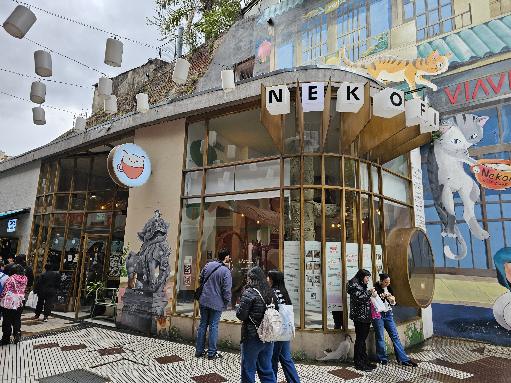

Punto 01 · Café temáticoAcceso Juramento◷ 30–45 min Cafetería temática ⌖ Juramento 1600
Nekofi (Acceso Juramento)
Cafetería inmersiva de inspiración japonesa y estética felina, con barismo de especialidad y ambiente lúdico.
Especialidad
recomendada:
Café con latte art temático, pastelería artesanal y
bebidas frías de autor.